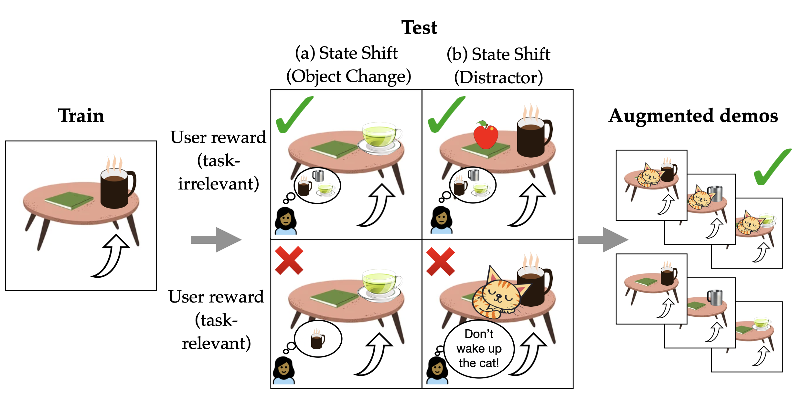
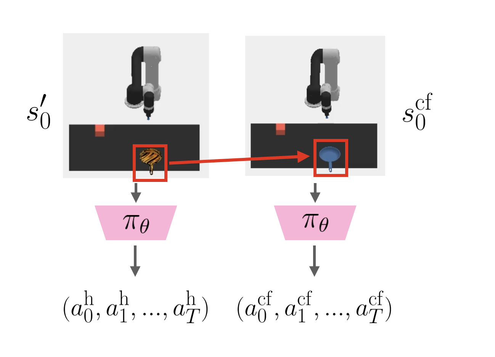
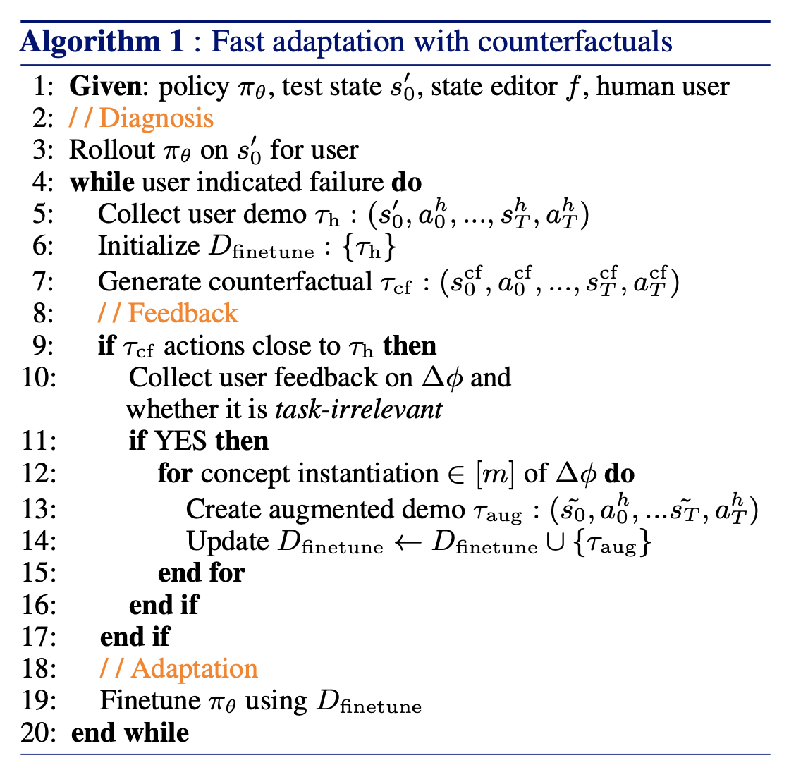
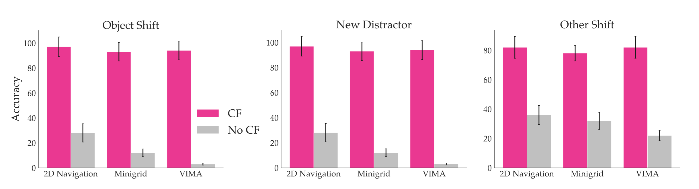
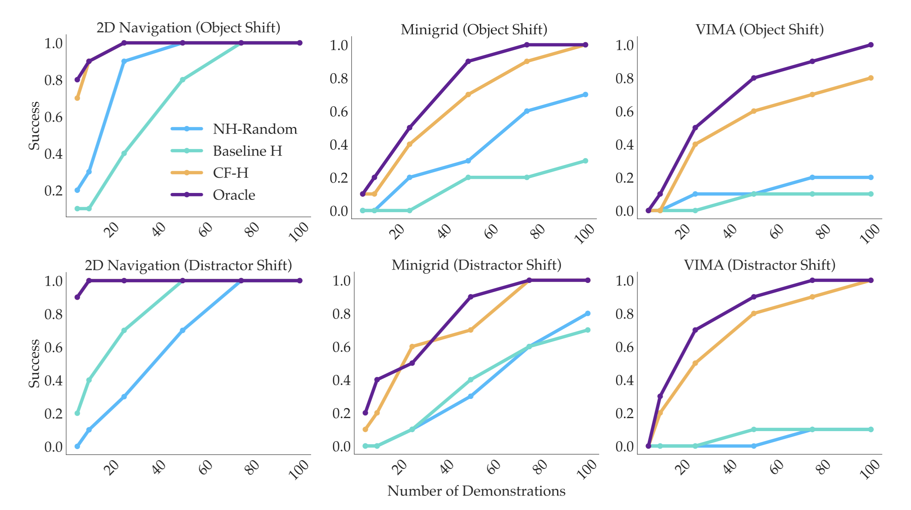

Summary
Generalizable policy learning in high-dimensional observation spaces is facilitated by well-designed state representations, which can surface important features of an environment and hide irrelevant ones. These state representations are typically manually specified, or derived from other labor-intensive labeling procedures. We introduce two methods, LGA (language-guided abstraction) and PLGA (preference-conditioned language-guided abstraction), which use a combination of natural language supervision and background knowledge from language models (LMs) to automatically build state representations tailored to unseen tasks. In LGA, a user first provides a (possibly incomplete) description of a target task in natural language; next, a pre-trained LM translates this task description into a state abstraction function that masks out irrelevant features; finally, an imitation policy is trained using a small number of demonstrations and LGAgenerated abstract states. In PLGA, we observe that these abstractions also depend on a user’s preference for what matters in a task, which may be hard to describe or infeasible to exhaustively specify using language alone. Ergo, we propose using language models (LMs) to query for those preferences directly given knowledge that a change in behavior has occurred. In PLGA, we use the LM in two ways: first, given a text description of the task and knowledge of behavioral change between states, we query the LM for possible hidden preferences; second, given the most likely preference, we query the LM to construct the state abstraction.
LGA

PLGA

Framework Overview
Diagnosing Distribution Shift Failures
Policies can fail due to different distribution shifts. The figure below shows illustrative distribution shifts for task: ``Get my mug." Shifted concepts can be state-based (a changed object) and also reward-based (dependent on user preference). We can deploy data augmentation for task-irrelevant shifts (green checks), a subset where the modified state does not impact desired policy behaviour. But how do we know what's task-irrelevant vs. -relevant for each user?
Generating Counterfactual Demonstrations for Human Feedback
Our key insight is that end users are uniquely positioned to recognize which concepts are relevant or irrelevant for their desired task. But how do we elicit good concept-level human feedback? We propose a counterfactual approach to identify failure. Consider that the human also observes a trajectory of the robot successfully retrieving the object in the same scenario but with a single change -- the pan being blue instead of striped. Being able to contrast the two trajectories of successful and unsuccessful behaviour can better position the user to identify visual concepts impacting failure. Here, the user may identify pan material to be a task-irrelevant concept, which can then be used to make the policy invariant to this concept via data augmentation.
 Adaptation to Personalized User Objectives
We test our framework in three domains consisting of both discrete and continuous control tasks with real human users. Through human experiments, we verify our main hypothesis that user feedback resulting from counterfactual demonstrations significantly improves the accuracy of user-identified TI concepts as well as the data efficiency of policy finetuning with less user effort.
Moreover, policies finetuned using this human feedback (CF-H) result in higher performance with less expert demonstrations required compared to baselines. These findings illustrate a promising direction into leveraging end users to more efficiently perform interactive alignment of robotic policies at test-time.
Paper

Diagnosis, Feedback, Adaptation: A Human-in-the-Loop Framework for Test-Time Policy Adaptation
Andi Peng, Aviv Netanyahu, Mark Ho, Tianmin Shu, Andreea Bobu, Julie Shah, and Pulkit Agrawal
@inproceedings{peng2023diagnosis,
title = {Diagnosis, Feedback, Adaptation: A Human-in-the-Loop Framework for Test-Time Policy Adaptation},
author = {Peng, Andi and Netanyahu, Aviv and Ho, Mark and Shu, Tianmin and Bobu, Andreea and Shah, Julie and Agrawal, Pulkit},
year = {2023},
booktitle = {Proceedings of the 40th International Conference on Machine Learning (ICML) 2023}
}Team

Andi Peng
MIT

Belinda Z. Li
MIT

Ilia Sucholutsky
Princeton

Theodore R. Sumers
Princeton

Nishanth Kumar
MIT

Andreea Bobu
The AI Institute

Thomas L. Griffiths
Princeton

Jacob Andreas
MIT

Julie A. Shah
MIT
Acknowledgements
This template was originally made by Phillip Isola and Richard Zhang for a colorful ECCV project, and adapted to be mobile responsive by Jason Zhang. The code we built on can be found here.